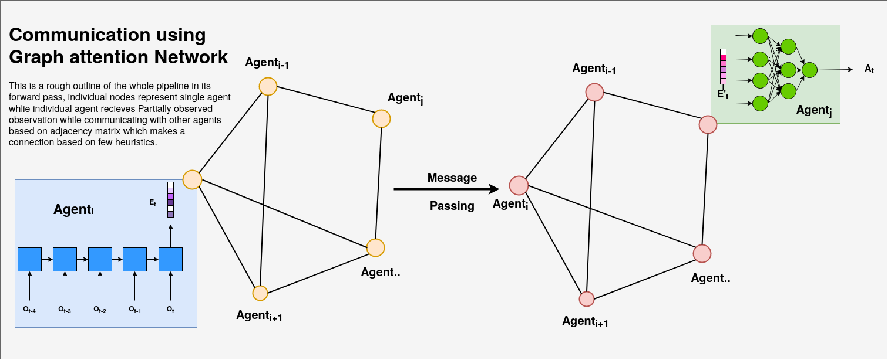

This is an implementation of Communication in MARL using Graph Neural Network. This is been trained and tested on StarCraft II, And this has shown improved training and performance metrics throughout all the maps. I have implemented this on top of PyMARL for easier comparative study with respect to other algorithms or implementations like ePyMARL.
Currently we have the following algorithms for training.
For communication we have used to different Architecures
More Information about the architecture and the execution can be found at MultiAgent GNN A brief outline would be as follows
 Pipeline for communication using Graph Neural Network
The implementation is written in PyTorch and uses a modified version of SMAC which could be found in smac-py to include the adjacency matrix as the observation more detail on it can be found here.
For a glimpse of the algorithm in action checkout the Output section
An adjacency matrix simply represents the vertices of the graph. For the current problem we have used a few heuristics for joining two nodes with a vertex. They are as below
This is a demo output from the policy whose stats are given above
Below are the training and test metric of the presented algorithm with QMIX on map 2s3z. The study is limited to the number of experiments due to limitation in computation at the disposal. The presented algorithm does support parallel envs and boosting the process of training. This would be tested soon
| Train | – |
|---|---|
| Battle win percentage | Average Return |
 |
 |
| Test | – |
|---|---|
| Battle win percentage | Average Return |
 |
 |